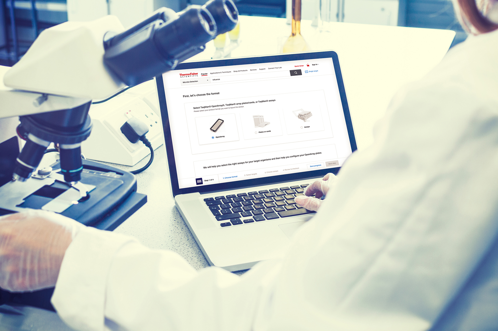
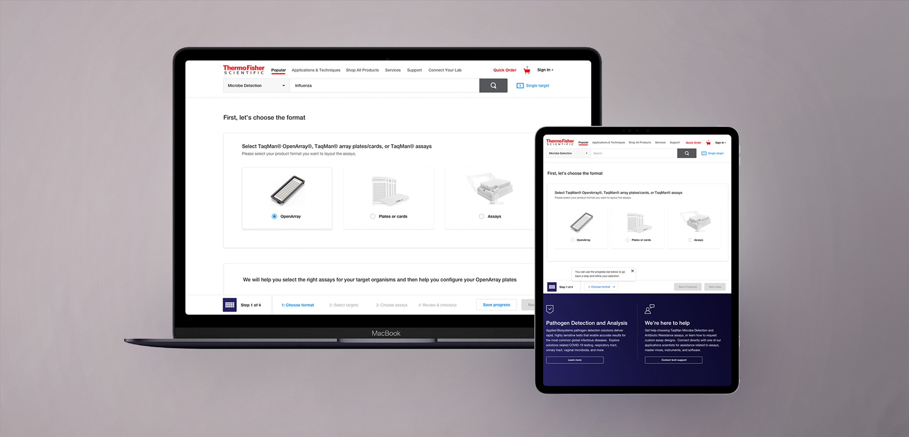
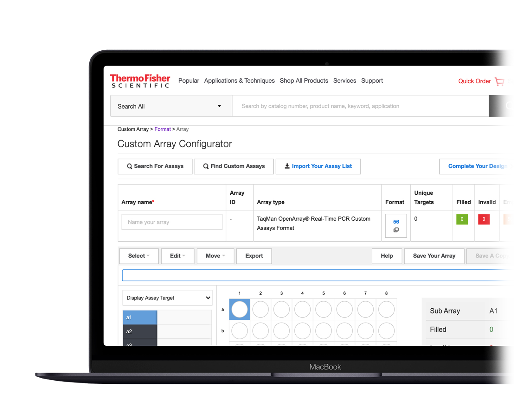
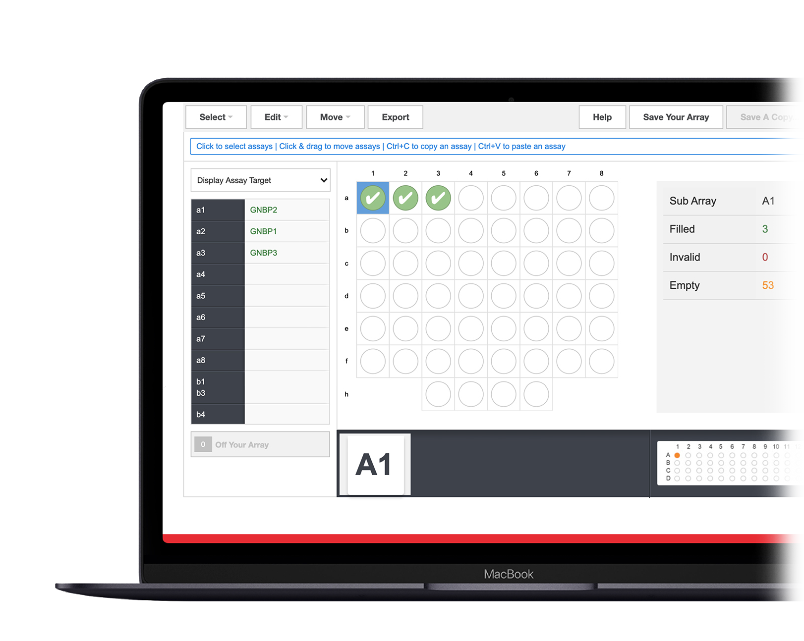
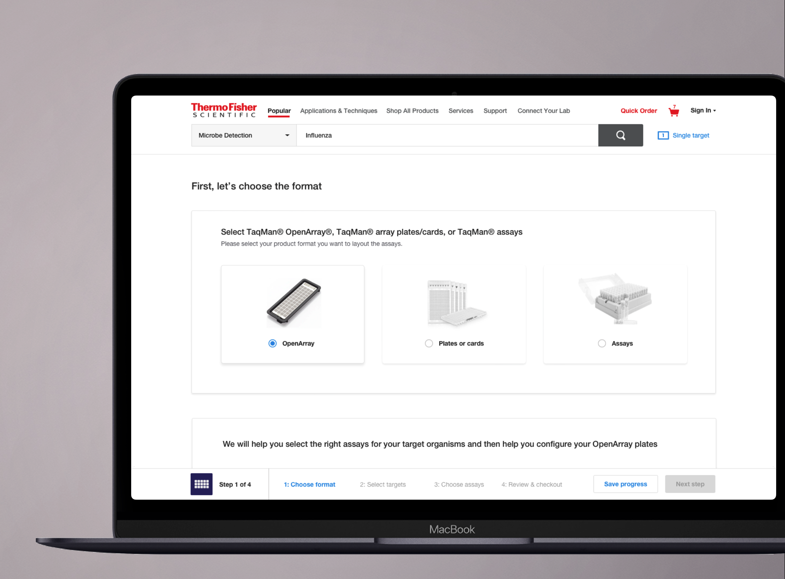
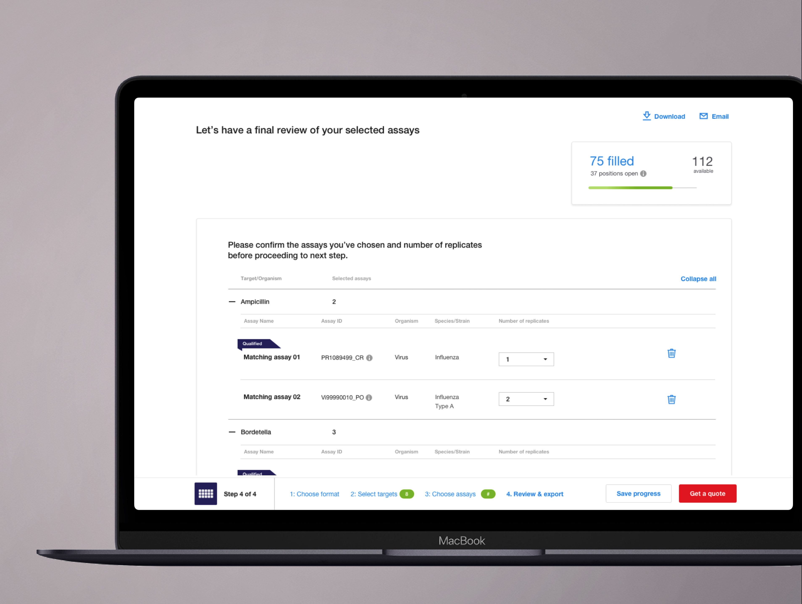
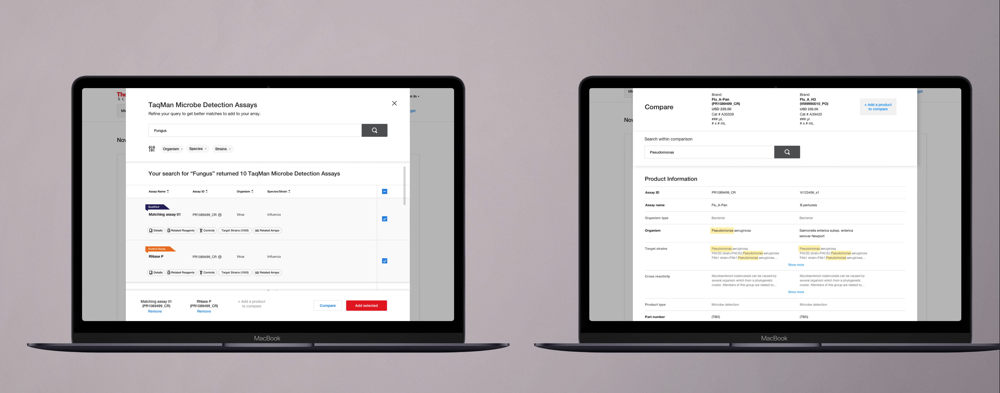
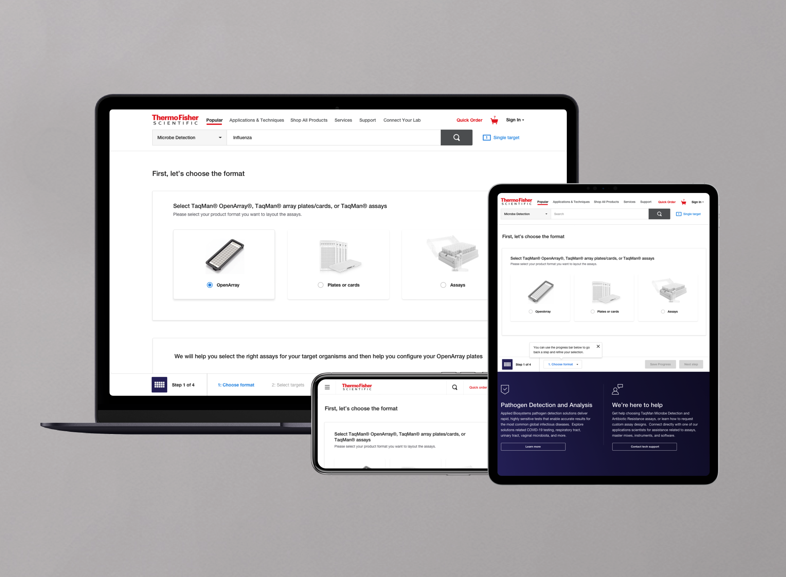

rDNA Configurator
Introduction
At TFS' DE group, I designed UX for eCommerce and rDNA applications, improving the customer's "Find-Decide-Buy" experience.My responsibilities included designing intuitive user experiences for rDNA applications, advocating for human-centered design with stakeholders, and contributing to the ongoing development of the TFS design system.
Client: Thermo Fisher Scientific
Project: Responsive web design
Role: Research and test, UX/UI Design
Tools: Sketch, Abstract, Zeplin, & Adobe Experience Manager.

Problem
With OpenArray volume growth, CVIT team needed to support the growth by enabling content expansion and implementing infrastructure that will support scalability and a customer experience suited to the needs of the clinical market.Goal
Enhance the customer’s online experience and increase value:• Improve Find-Decide-Buy experience
• Optimize workflow for online ordering
• Leverage Magellan’s UI capabilities

Challenge
• The workflow is disjointed between customer needs and manufacturing processes• Information/feedback for customers to make informed ordering decisions is either hidden or unavailable
• The configurator is visually overwhelming and cumbersome to use
• Information/feedback for customers to make informed ordering decisions is either hidden or unavailable
• The configurator is visually overwhelming and cumbersome to use


Solution 1 / 5
• Provide ordering process with narrative steps• Visually show updates user made prominently
• Help user to make an informed decision with addition of new content and feature
• What you see is what you interact with (In-progress)
• Supports responsive

Solution 2 / 5
• Provide ordering process with narrative steps• Visually show updates user made prominently
• Help user to make an informed decision with addition of new content and feature
• What you see is what you interact with (In-progress)
• Supports responsive

Solution 3 / 5
• Provide ordering process with narrative steps• Visually show updates user made prominently
• Help user to make an informed decision with addition of new content and feature
• What you see is what you interact with (In-progress)
• Supports responsive

Solution 4 / 5
• Provide ordering process with narrative steps• Visually show updates user made prominently
• Help user to make an informed decision with addition of new content and feature
• What you see is what you interact with (In-progress)
• Supports responsive

Solution 5 / 5
• Provide ordering process with narrative steps• Visually show updates user made prominently
• Help user to make an informed decision with addition of new content and feature
• What you see is what you interact with (In-progress)
• Supports responsive

san diego, california
858.314.8551.
uxdesign.hello@gmail.com